Geocoding Using ArcGIS Pro (with clowns.csv)
This guide walks you through a complete geocoding workflow in ArcGIS Pro using the Stanford Geospatial Center's locator.stanford.edu geocoding services and the clowns.csv dataset. You'll learn how to start ArcGIS Pro, log in to Stanford's ArcGIS Online, connect to the locator, import your CSV to a geodatabase, fix ZIP codes with dropped leading zeros, and geocode your data.
Prerequisites
- ArcGIS Pro installed (on your computer or in the Stanford Geospatial Center Lab)
- Stanford University credentials
- Access to stanford.maps.arcgis.com
- The
clowns.csvdataset (located in theData/folder)
Important: The locator.stanford.edu services are IP-restricted to the Stanford Network. If you cannot connect, ensure you are using the Stanford AnyConnect VPN. For VPN help, visit Stanford IT VPN documentation.
About the clowns.csv dataset
This tutorial uses the clowns.csv sample table to demonstrate geocoding workflows. The CSV contains point-address records (one row per record) with common address fields used for geocoding.
This dataset was created from the Clowns of America International Membership Database (anonymized) obtained in 2007 from Clowns of America, International, for use in teaching. Attributes include those from the original data table ('City', 'ZipCode', 'Clown_Name', and 'Country'), and an attribute 'Clown-Na_1' which represents the values in the 'Clown_Name' attribute field after a "Cluster and Edit" operation, performed in OpenRefine to collapse values so that "Co Co" or "Co-Co" both are clustered and edited to become "CoCo" for use in name frequency analysis.
This layer is intended to be used for teaching and instruction at Stanford's Geospatial Center. Where to get the file
- The archival source is hosted on Stanford Earthworks: https://earthworks.stanford.edu/catalog/stanford-vx572wx7854
- Download the CSV from that page and save it to your local Data folder (for example ~/Documents/Geocoding/Data/ or C:\Users\
\Documents\Geocoding\Data) before proceeding.
Notes
- Verify license and usage restrictions on the Earthworks record before reuse.
- Inspect the ZipCode column for dropped leading zeros and follow the ZIP_str fix in Step 4 before geocoding.
- If your downloaded file has a different schema, adjust field mappings in the Geocode Table tool accordingly.
Step 1: Start ArcGIS Pro and Log In
- Launch ArcGIS Pro.
- When prompted, sign in with your Stanford credentials to stanford.maps.arcgis.com.
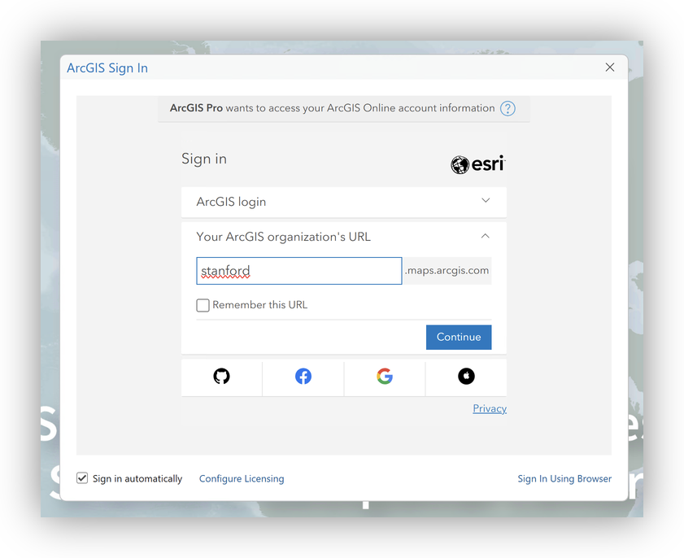
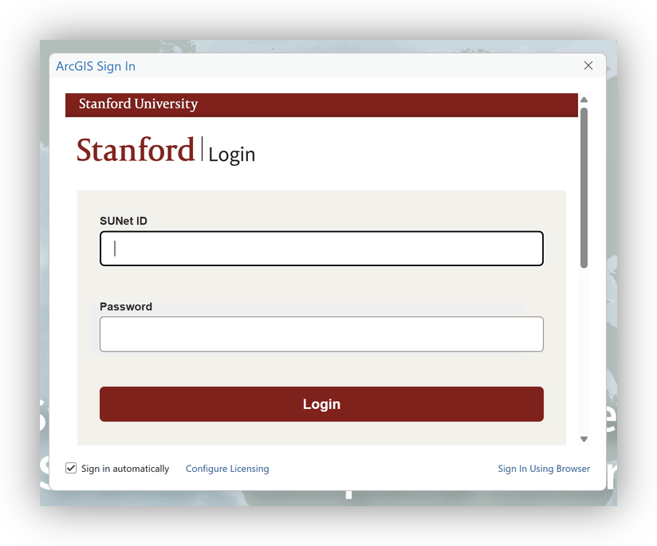
Step 2: Connect to the Stanford Locator Service
- In ArcGIS Pro, Start a New Project, with Catalog
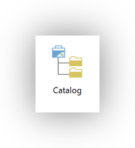
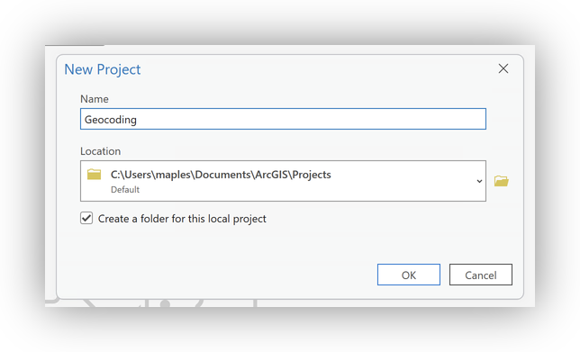
- go to the Insert tab.
- Click Connections > Server > New ArcGIS Server.
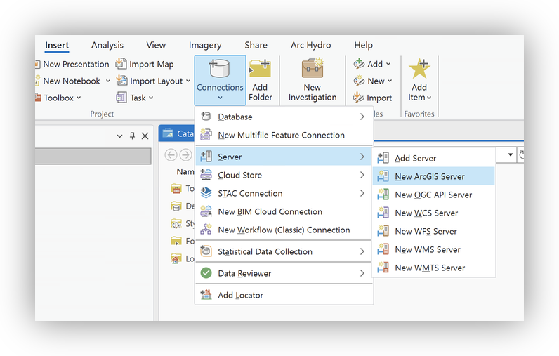
- For Server URL, enter:
https://locator.stanford.edu/arcgis - Leave authentication blank and click OK.
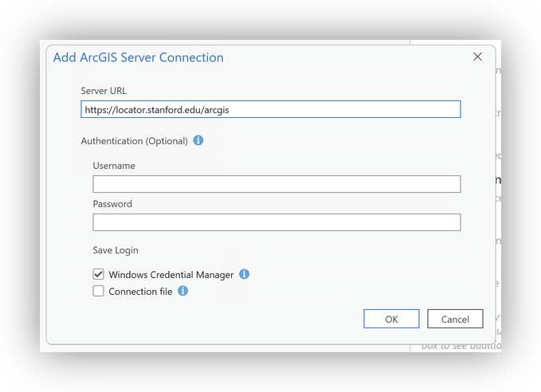
- In the Catalog pane, expand Servers>arcgis on locator.stanford.edu.ags>geocode> and locate the Stanford regional locator services.
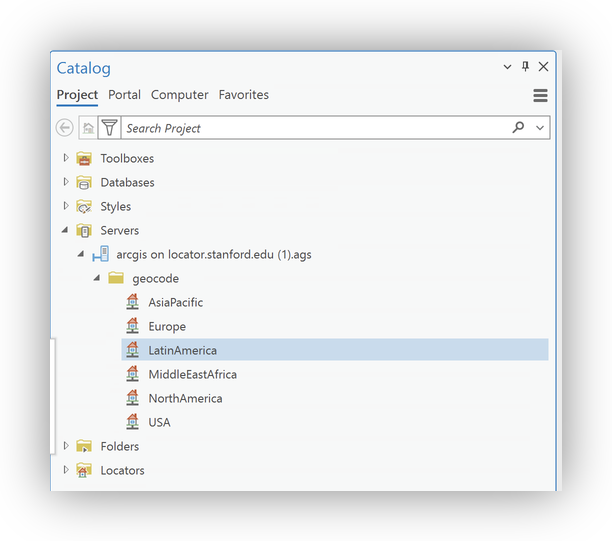
- Right-click the USA locator and select Add To Project. The locator will appear in your Locators folder.
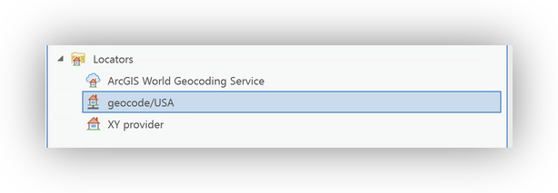
Note on ArcGIS World Geocoding Service
When you open ArcGIS Pro, you will see the ArcGIS World Geocoding Service listed by default in the Locators pane (see image below). This service is available to all Stanford users, but it consumes ArcGIS Online credits for each geocoding transaction. While it is suitable for small geocoding jobs, for any project involving more than a few thousand records, you should use the Stanford Geospatial Center's locator at locator.stanford.edu to avoid unnecessary credit usage and ensure support for research-scale geocoding.
Begin by downloading the clowns.csv dataset and saving it to an easy-to-find folder on your hard drive (for example: C:\Users\<you>\Documents\Geocoding\Data\ on Windows or ~/Documents/Geocoding/Data/ on macOS/Linux). Create the folder if necessary.
Adding a new Folder Connection to ArcGIS Pro
Note: ArcGIS Pro does not automatically create connections to local directories. You must explicitly add a folder connection for each project (Catalog pane → Project > Folders → Add Folder Connection or click the folder icon ► Add Folder Connection). Adding the connection makes files like clowns.csv visible to ArcGIS Pro and available to geoprocessing tools; folder connections are saved in the project (.aprx) and may need to be recreated when opening the project on another machine.
- In ArcGIS Pro, open the Catalog pane.
- Under Project > Folders, right-click and choose Add Folder Connection (or click the folder icon ► Add Folder Connection) and browse to the folder where you saved
clowns.csv. This makes the file easy to find from within ArcGIS Pro.
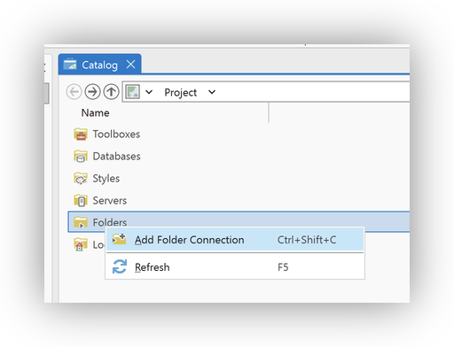
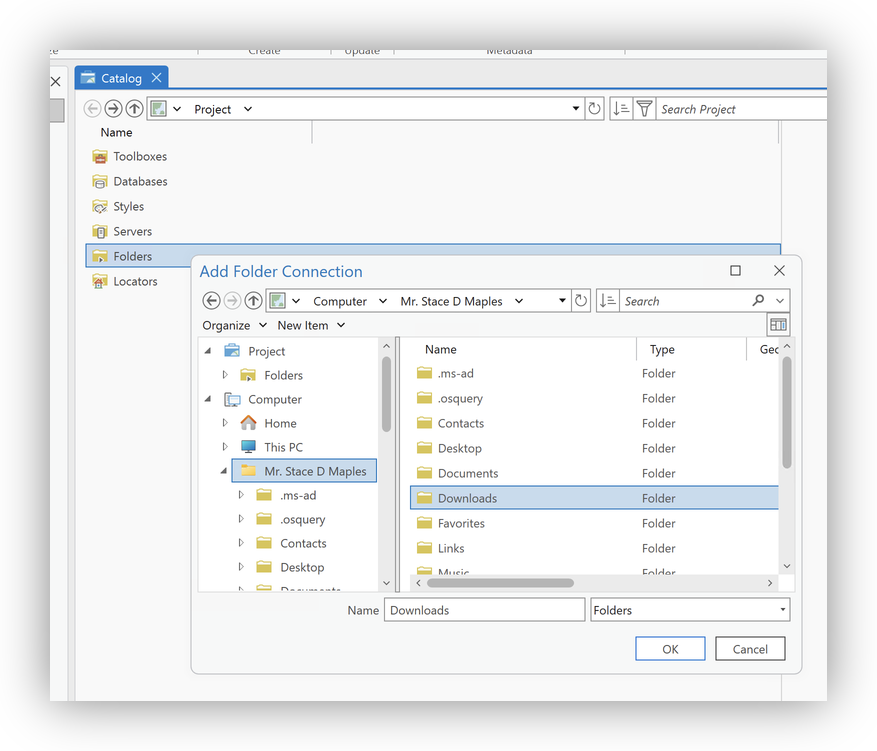
- In the Catalog pane, expand the newly added folder and confirm
clowns.csvis visible.
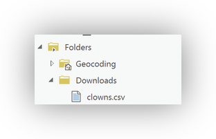
- Right-click
clowns.csvand select Add To (New) or Current Map (or Create Table if prompted). - To enable geocoding, right-click the resulting table and choose Data > Export to Table.
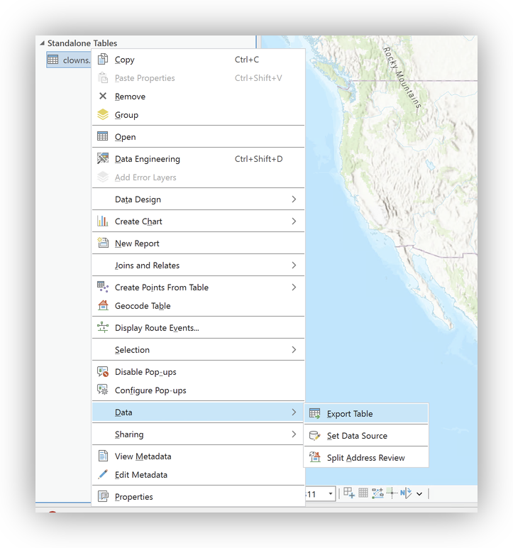
- Select your project geodatabase as the destination and give the resulting table an appropriate name
- Click OK.
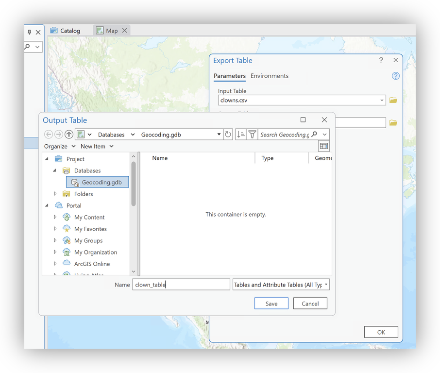

Step 4: Fix ZIP Codes with Dropped Leading Zeros
Note: Spreadsheet software may drop leading zeros from ZIP codes, turning 01234 into 1234.
To restore ZIP codes:
- Right-click and Open the Attribute table for your imported data.
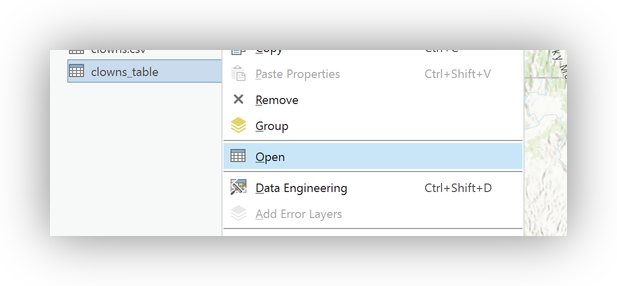
Click Add Field to create a new field:
- Name:
ZIP_str - Type: Text (String)
Alias: Zip String
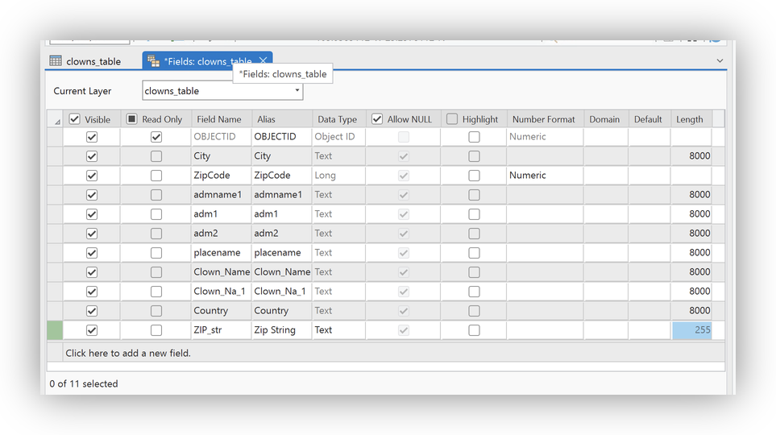
Save the new field.
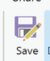
- Name:
Click on the Select by Attributes button to open the dialog.
- Selection Type: New Selection
- Expression:
Where Zipcode is less than 9999
- Click Apply to Select all records that are missing a digit.
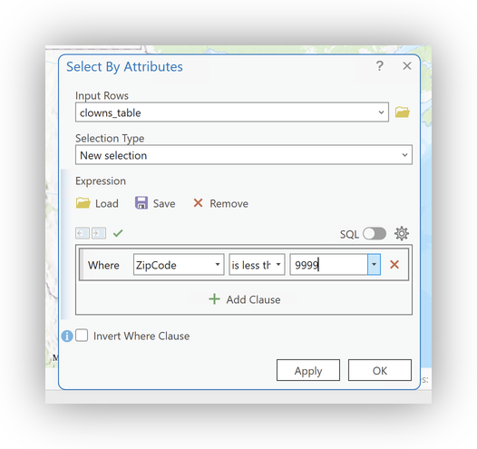
- Right-Click on
ZIP_strand select Calculate Field.
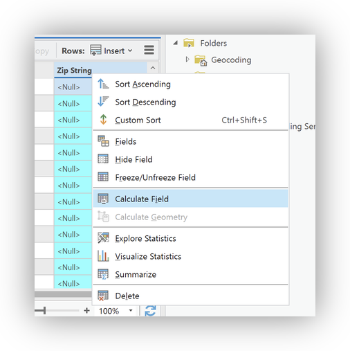
- In the calculation dialog:
- Leave the option to "Use the selected records" checked
- Use Esri's Arcade scripting language (it's quite similar to Excel's functions, so easy to learn)
- For this selection, set the column values to:
CONCATENATE('0',Text($feature.ZipCode))
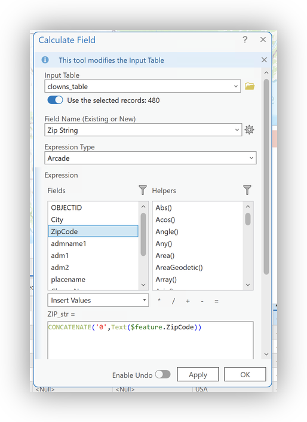
Click on the Switch button to switch the selection to all valid zipcodes.
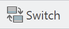
In the calculation dialog:- Leave the option to "Use the selected records" checked
- Again, use the Arcade scripting language
- For this selection, set the column values to:
Text($feature.ZipCode)
- Now most ZIP codes (we're ignoring a few with leading 00s) are correctly formatted as 5-digit strings.
- Edits are saved automatically.
Clear your selection by clicking on the Clear button:
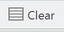
Step 5: Geocode Your Data
- Right-click on the
clowns_tableyou just cleaned up and select the Geocode Table tool.
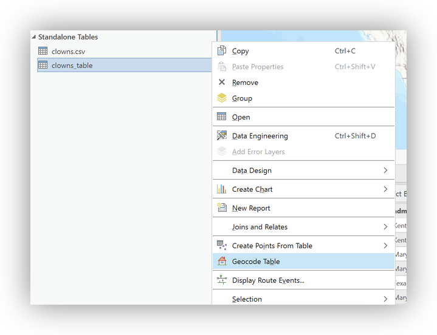
Walking through the geocoding wizard:
- Choose the appropriate Stanford locator service as the Input Address Locator, in this case, the
geocode/USA locator, you added earlier. - Confirm the
clowns_tableas the Input Table, and set your Data Structure to "More than one field" - Map your address fields (being sure to remap the
ZIP4locator field to theZIP_str). - Confirm the Output Settings (use the Info icon to explore info about options)
- Select
United Statesas the "Limit by Country" setting. - Select
Postalas the "Limit by Category" setting - Double-check your setting and Field Mappings in the Final Panel.
- Click Run to geocode your data.
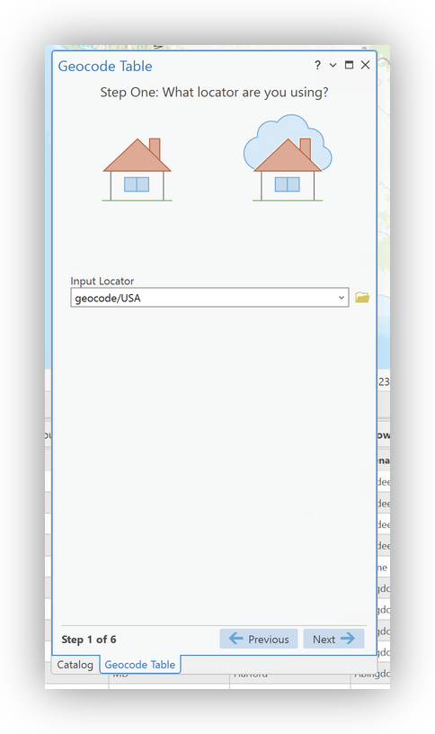
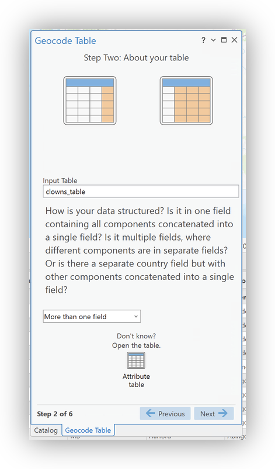
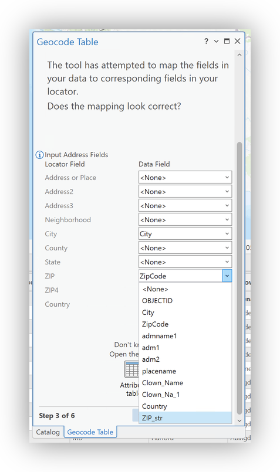
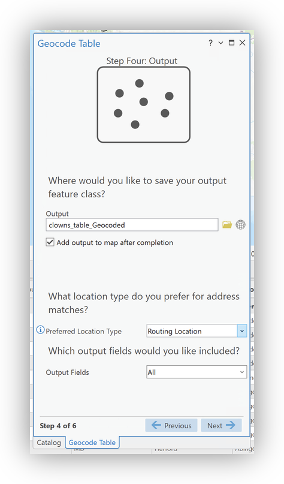
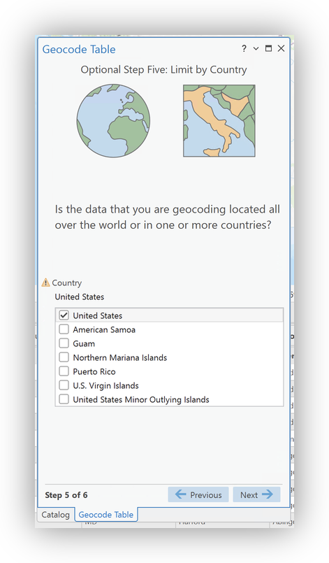
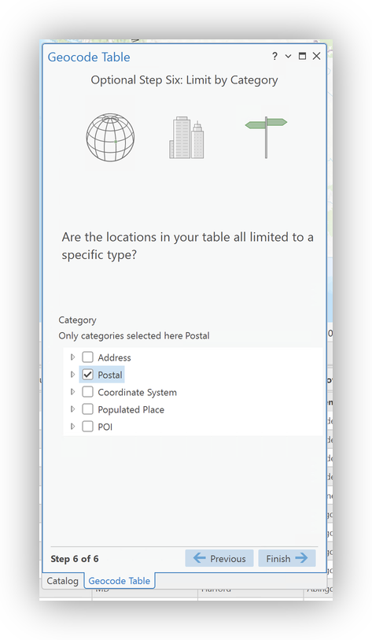
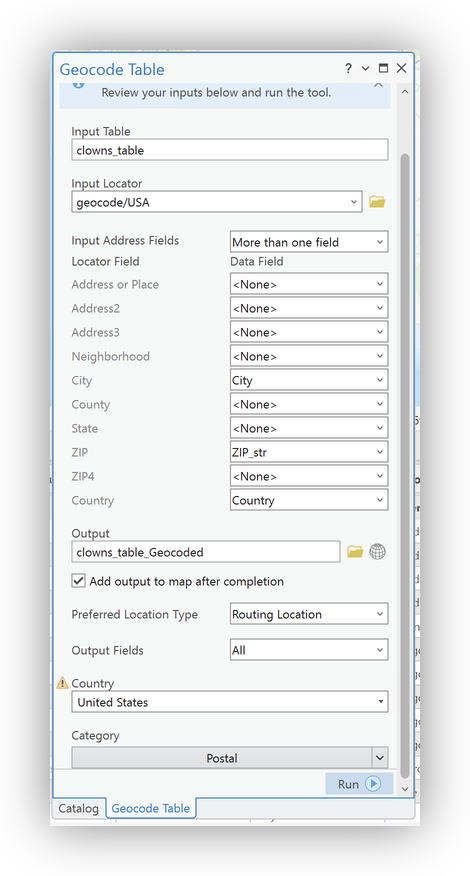
Step 6: Review Results
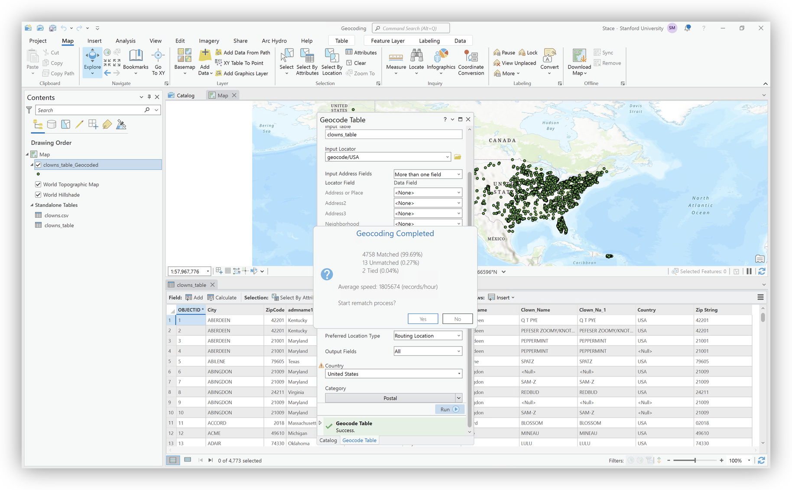
The output feature class will be added to your map.
Check the attribute table for match status and scores.
- Click Yes in the "Geocoding Complete" pop-up to begin the review process
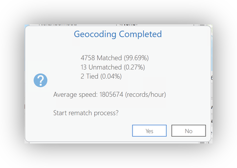
- You can use the Rematch Addresses Dialog to investigate and rematch (or approve matches with scores lower than the automatic threshhold)
- Use the button to match a record.
- You can also use the Select from Map button 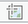 to physically place a point for a record.
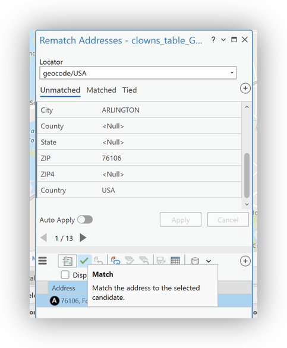
- Unmatched records may need further cleaning or manual review.
- Right-click on the new
clowns_table_GeocodedLayer in the Table of COntents and Select Zoom to Layer to see your final geocoded result.
Additional Geocoding Tips and Best Practices
- Always check for formatting issues after importing data from spreadsheets.
- Document your workflow for reproducibility.
- For help, contact stacemaples@stanford.edu.
- For large datasets, consider breaking into smaller batches and running during off-peak hours.
- Do not use the Stanford locator service with PHI or high-risk data.
Troubleshooting
- If you cannot connect to locator.stanford.edu, verify VPN/network status and server URL. (If you can see the Info Page at that link, you should be good to go!)
- Low match rates? Review data quality, field mapping, and locator choice.
- Service unavailable? Check stanfordgis mailing list or contact support.
Resources
← Back to Geocoding 101 Introduction
Tutorial prepared by the Stanford Geospatial Center